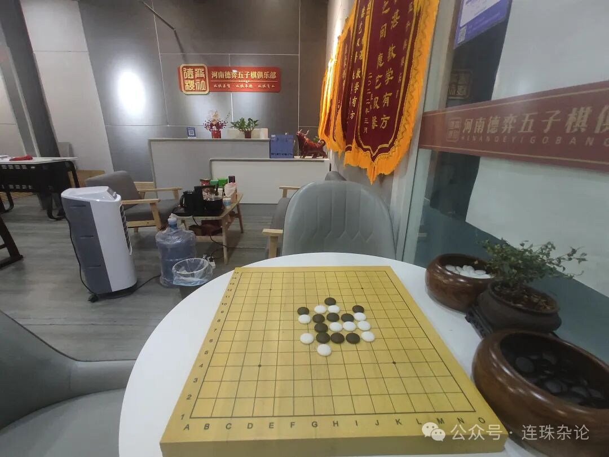
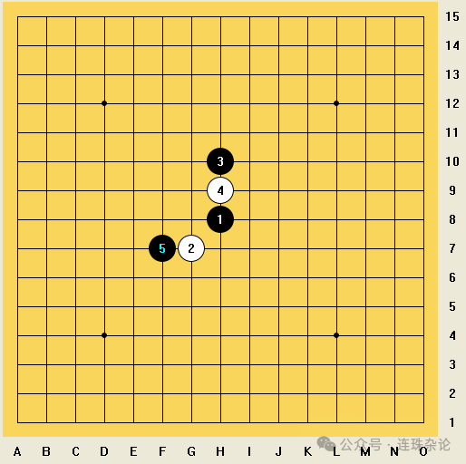
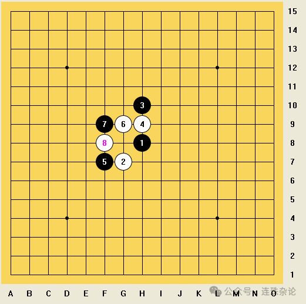
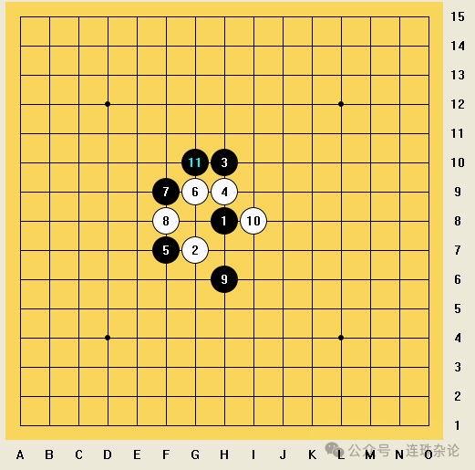
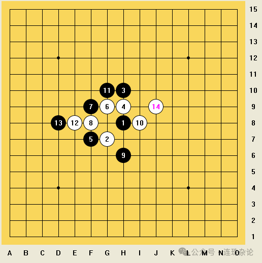
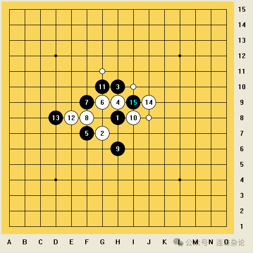
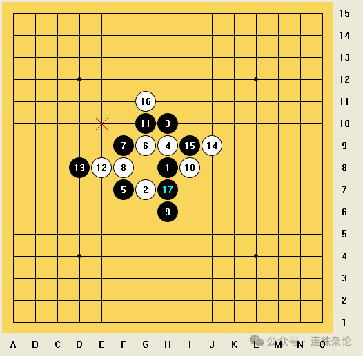
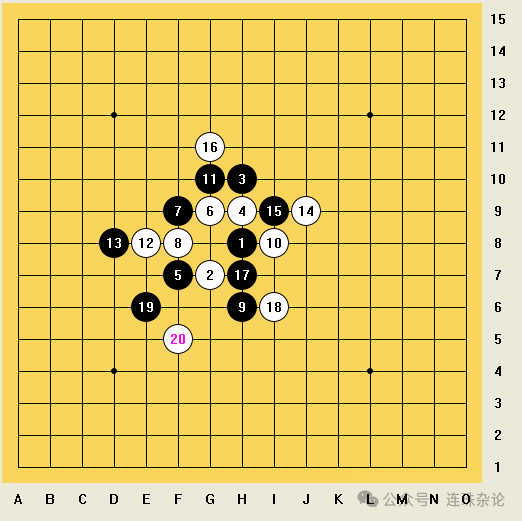
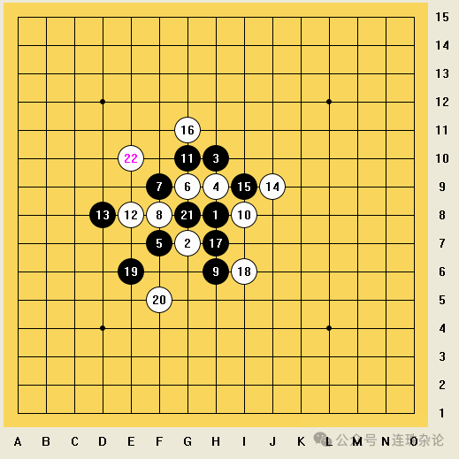
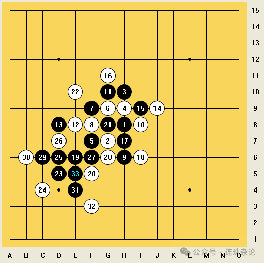

2024河南省五子棋（夏季）等级赛游记①
(全文约2400字)
6月23日，2024河南省五子棋（夏季）等级赛在郑州落幕。河南省五子棋环境之佳，不言而喻。我计划写三至四篇，详细阐述此次旅行，并附上部分对局及简略分析。这篇我将详写比赛前日的一局棋。

6月22日，有幸来到了河南德弈五子棋俱乐部，与俱乐部的一位三段的姐姐进行了一盘塔拉山口-10规则的五子棋对弈。相信大家都已知道这位姐姐是谁。实际上自去年7月省智运会结束以来，我已近一年没有下过棋了，谱量几乎为0，计算力是未知数。据说在这一年内，“塔10”规则业已成为了国际比赛的正式规则。我便没有准备地进行了这盘对局。这盘对局也暴露出了我的许多问题。

(此谱为我的视角，对方视角请倒置手机)
对方先行开局。第二手我选择交换。对方采用斜止开局，我第三手走出明星局，对方思考了一段时间后，决定第四手通寒星，没有走正常山口局的常规白4。这个开局，我隐约感觉遇到过，但是年代应该过于久远。我只能模糊地给出四个左右的黑必胜点，至于平衡点，感觉很难找到。只好选择交换，让对方给出第五手。这时黑5对方走出了下图所示的一步：

这个开局我极大可能是遇到过一次，但我脑海里依然很陌生。当时我认为，如果白4和黑5互换位置，显然是黑必胜。但是当前局面，我不好评估。如果让我执白，直接走g9点双活二，黑顺势一挡，白棋非常被动。倘若选择单活一个二，变化太多，难以短时间算清。想了较长一段时间，决定还是交换过来拿黑。
局后复盘才发现，漱星阁的开局库里未记载此开局，所以这个开局应该是白必胜。但打开Katago查看，初始白的胜率只有70％左右，必胜难度是非常大的。但白6落于g9处并不好，至于正解在哪，棋友们可以自行挖掘。
至此黑白确定。
交换：+--++
结果：黑胜
对方白6走了g9处的双活二，前期我已思考过，不长时间过后我黑7行于预先想的f9挡。对方应该意识到了此时白方并不好下，想了较长的一段时间，白8在f8处落子。

这里我思考了五分钟以上，意识到当前棋型实际上是接近对称的。虽然黑目前没有一个活二，但白盘面上仅有的两个活二空间十分有限。我的第一感是走e9处挡白的斜活二，但是这样右下角会漏给白方，且自身棋型不够舒展。最终我决定黑9走h6处挡白斜活二的另一侧。这样一来盘面大致是对称的，且发展空间很大，以后黑会很容易形成活二、眠三等。
这时白方应该意识到了目前自己棋形非常紧缩的情况，思考过后白10行于i8处向外面走了一个斜活二，盘面上也形成了一个三三点。我感觉这步棋效果并不佳，直接走三三点我便可以获得两个活二，这时倘若白Pass一手，当前盘面也足够VCT杀了。仔细想想没有看到更好的策略，我黑11便落在了g10点。

对方看到这个黑11后显然意识到目前处于劣势，不得不对黑的两个活二进行防御。对方白12选择落于e8处堵住了黑的斜活二，同时阻断了黑在左侧连通f7处棋子进行系列进攻的路线。行棋至此，我意识到现在黑棋应该属于连续做棋进攻有希望必胜的阶段，如果进攻得当，白棋的体验感会十分差劲。可惜实战时不假思索，认为直接挡住白方横活二一定不差，在半分钟之内，便在d8处顺手挡了一下白的横活二，落下了黑13。此时我察觉到白方明显没有先前那么紧张，轻松了许多，顿时感觉黑13可能不太正确。不久，白14便下在了j9处，形成了一个眠三和一个活二：

这个时候换作我紧张了。冷静下来发现自己应该还没有处于劣势。起初我计算了一下直接走g7挡在眠三中间是否自己还可以继续先手进攻，发现白可以走j8处，接下来的计算量较大，难说黑是否还占据较大的优势。白或许也会走i10处，完全让给我继续进攻，虽然黑应该优势，但是我短期内也肯定没杀。继续换防，黑倘若走i10处活三，白顺势挡右，之后一系列交换黑并不占优，反而会给白方外围送出不少材料。除此之外，我还计算了走h7处挡白斜活二的同时自己眠三的路数，发现左侧的材料难以有进攻的机会，且思路太诡异，有点跑偏，局面走势将异常迷离。长考后，无奈黑15只能走在g7处，期待白走出非j8处的变化。

盘后复盘发现，当时思考的黑选点大致都是Katago的推荐点。思考的白接下来的f8点确实是最佳招法，此时黑稍优。如果白走i10点，黑确实必胜，但需要走对几步关键的做棋。
这个时候白16实在是走出了我没有预想到的一步，落在了g11处。现在盘面上白方只有一个活二，且没有太好的连续进攻手段。而且下方白棋子力空虚，我认为可以在下侧做一番棋，看看能否做出必胜的VCT。短考后我黑17落于h7处，挡住白活二的同时自己眠三接斜线跳活二。盘后经本省少年棋手弈天子指点，认为我的这步黑17还是比较保守，完全可以在下侧的广阔空间里做棋，不需要挡住白仅剩的活二。

白18选择走在i6处挡住斜线的跳活二。这样一走虽然挡住了我右下方的进攻路线，但是左下方白棋依然没有子力，我可以继续做棋。黑19我选择落于e6处单走一个斜活二，继续拓展左下角的空间。我的这两步棋在Katago眼中都不是最佳，但仍然处于必胜状态，可以下。这从一定程度上反映了我攻棋能力的不足。

对方白20落于f5处，没有防住任何一个活二或是眠三。我猜测对方应该是算到了我后续可能的斜线活三-竖线跳活三的走法，于是提前落于j11处，如果我再执行这套走法，斜线的一个活二将成为眠二。但是这步棋仍然有漏洞。我冷静思考了一下，认为很可能已经存在必胜VCT。
实战中我黑21先在g8处眠三的同时做了一个四三，白22走在e10处挡住了这个四三。这个时候我便看到了一条似乎必胜的VCT。棋友们也可思考一下，看看能在多久之内算到这个VCT。

后续我便执行了这条大约7步的VCT杀。虽然这条VCT比较简单，但是我还是算了至少六分钟才敢落子，以防出现白非常规防点后可能出现的惨案。至33白投了。

这盘棋下了超过一个小时，随手棋还是很少的。总体来说，虽然这盘棋赢了，但是仍有一些瑕疵。我认为这盘棋对方还是有所保留的。对手得知我近一年没有下过棋时，应该并没有拿出全部实力。总之，这是一次很好的历练，使我在一定程度上获得了适应，为第二天的正式比赛做了很好的积淀。